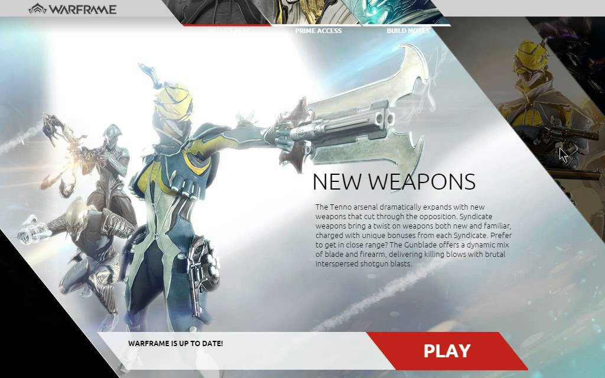
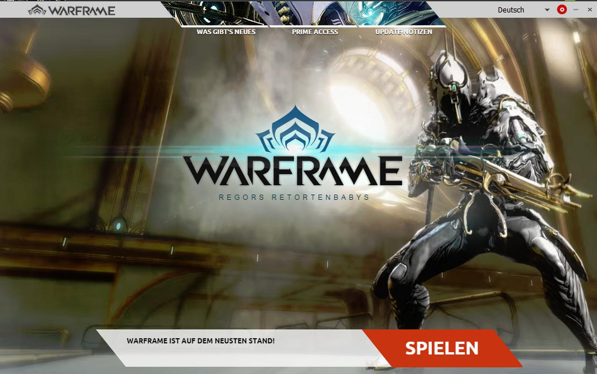
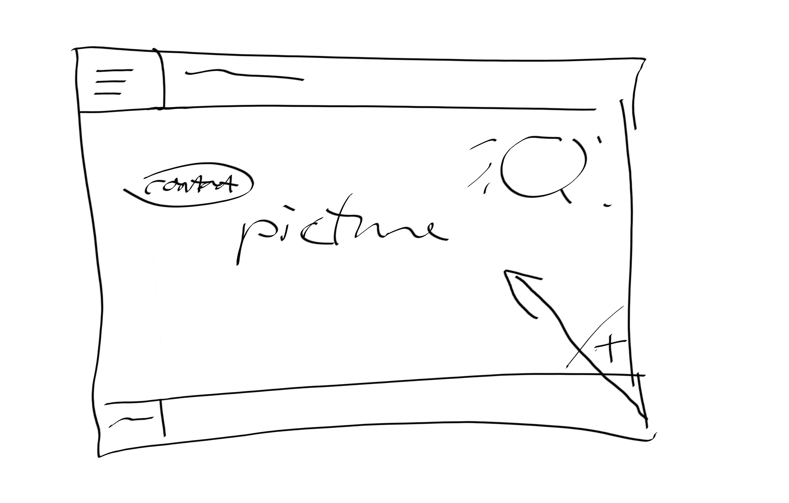
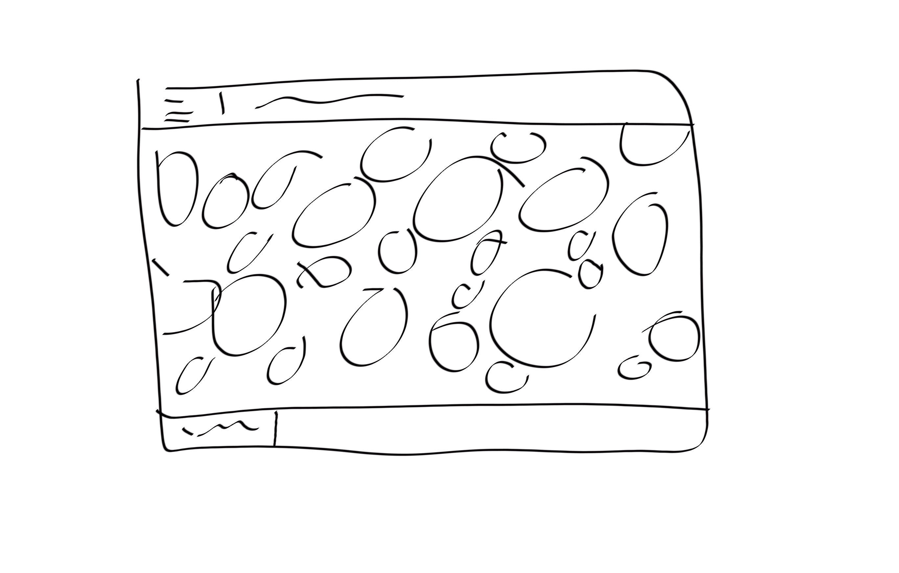
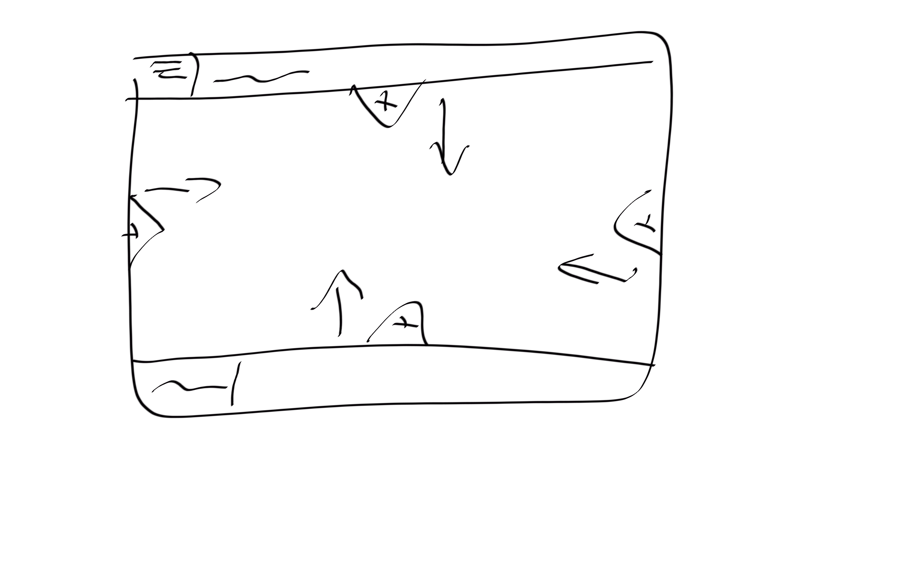

Models of good UI Practice
Homepage sliding button inspiration
 My idea mainly came from the launcher for the game warframe. When you click the black
triangle on the bottom left of the first image an overlay slides over and it
looks like the second image. I decided to make use of this to increase the
space available on a single page as I wanted to avoid scrolling on all my pages.
To do this I simply positioned the overlay off-screen. The clickable part is a radio
button that on click uses a css transition to move the overlay into place.


I knew I wanted to have a hamburger menu so sites like Squeeze Creative
and Hideout Lodge appealed to me. I decided to adapt it a fair
bit in the end but I started there. I also wanted to have mimimal
to no scrolling on the site so I looked about for sites such as
The Girl Effect. However I looked at the site's layout more and decided
to not take too much insperation from it as I wasnt a fan.
How I came up with my final design
My design came from a few key features I wanted to include.
Firstly I knew I wanted to avoid scrolling on most or all pages,
and secondly I wanted to base the design heavily on mobile apps especially for the navigation.
I wanted to avoid scrolling and instead find other, different,
ways of showing more content on 1 screen. This is both because my designs work better on a single screen
and because I found it way more interesting and fun to try to make the most of the space I had. As it was,
I ended up having a lot of sliding-in pannels that effectivly counted for whole other pages.
Basing my desktop design on mobile content made it a lot easier to make the move to a phone user-interface
as most of the re-designing had already been done. It also allowed me to use a lot of different designs
like fly-in menus that I havent seen used in other sites for better or worse.
For working in a team, we all came up with ideas and shared them with each other to see
what we all thought of them. This allowed us to give constructive criticism and not end up with a
horribly out-dated design. We all still ended up with different designs but im very happy with them as a whole.
All in all im quite happy with the final
design that I went for.
Early Sketches
  Shown here are some early designs for 3 of my pages. Quickly
sketching out ideas is my favourite way of designing a page
and I used it heavily for the more complex page designs. It
allowed me to focus on the creation of the page without
worrying about remembering how it is meant to look.